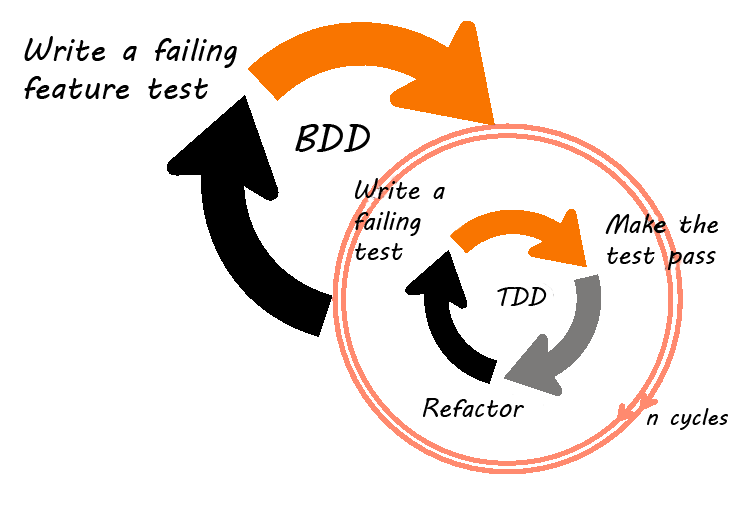
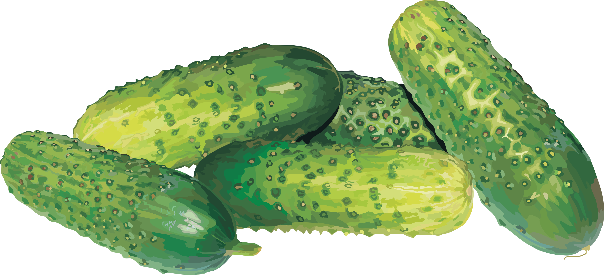

{{ currentSlideIndex + 1 }} / {{ order.length }}
- {{ section }}
prezentacja webdev.legnica #1
Wierszyki i ogórki
wstęp do Behata
autor prezentacji
Krzysztof Rewak
whoami
@krzysztofrewak
Krzysztof Rewak
czy każdy wie czym jest
Test-driven development?
TDD
idea jest prosta
(choć wdrożenie wymaga odrobiny wytrwałości)
 autor:
Sukoreno Mukti
autor:
Sukoreno Mukti
spójrzmy na ten test:
public function testNameSlugifier(): void
{
$zoo = new Zoo(["name" => "Zoo Dresden"]);
$this->assert("zoo-dresden", $zoo->slugify());
}
możemy napisać do niego następujący kod:
public function slugify(): string
{
return strtolower(str_replace(" ", "-", $this->name));
}
może to rozszerzymy?
public function testGermanNameSlugifier(): void
{
$zoo = new Zoo(["name" => "Tierpark Görlitz"]);
$this->assert("tierpark-gorlitz", $zoo->slugify());
}
albo jeszcze bardziej?
public function testUkrainianNameSlugifier(): void
{
$zoo = new Zoo(["name" => "Київський Зоопарк"]);
$this->assert("kiivskiy-zoopark", $zoo->slugify());
}
chyba wyjdzie na to, że skorzystamy z czyjegoś sluggera:
public function slugify(): string
{
return Str::slug($this->name);
}
przedrostek
Test-driven
jest zatem łatwy do zrozumienia
co może zatem oznaczać
Behaviour-driven
?
BDD
idea jest dalej prosta
(ale musimy już być psychicznie nastawieni na TDD)

autor:
Halil Bozan
BDD w łączy język specyficzny domeny
z językiem naturalnym
i językiem programowania
za pomocą zdań rozpoczynających się od
it should
lub
when something happens
można opisać praktycznie wszystkie kryteria akceptacji praktycznie każdej biznesowo istotnej funkcjonalności systemu
za pomocą instrukcji warunkowych, pętli i działań na obiektach można przetestować praktycznie wszystkie funkcjonalności systemu
wg Vicotra Farcica w
Test-Driven Java Development
przede wszystkim należy zastanowić się:
* od czego zacząć?
* co i ile testować?
* jak nazywać testy?
* jak rozumieć niepowodzenie testu?

ogórki
stąd też pojawił się Gherkin
(ogórek, korniszon)
, nowy pseudojęzyk pseudoprogramowania, który byłby idealnym pomostem między klientem, analitykami i programistami
I'm guest user & I'm preparing "PATCH" request to "/api/profile" endpoint,
I would like to receive "401" status code & "You're not authorized for this action" message
after I send the request
scenariusz w języku Gherkin opiera się przede wszystkim na trzech słowach kluczowych:
Given
,
When
,
Then
(można je uzupełniać spójnikiem
And
)
Scenario: Unauthorized user wants to update its profile
Given I am guest user
And I am preparing "PATCH" request to "/api/profile" endpoint
When I send the request
Then I should receive "401" status code
And I should receive "You're not authorized for this action" message
Scenario: Checking route aggregation
Given there's a route named "Kessel Run" with following planets:
| name |
| Formos |
| Rion |
| Kessel |
Then its planets list should have "3" planets
And all of its planets should not be connected as neighbors
Scenario Outline: controlling cucumbers
Given there are <start> cucumbers
When I eat <eat> cucumbers
Then I should have <left> cucumbers
Examples:
| start | eat | left |
| 12 | 5 | 7 |
| 10 | 5 | 5 |
Feature: Multiple site support
Background:
Given a global administrator named "Greg"
And a blog named "Greg's anti-tax rants"
And a customer named "Wilson"
And a blog named "Expensive Therapy" owned by "Wilson"
Scenario: Wilson posts to his own blog
Given I am logged in as Wilson
When I try to post to "Expensive Therapy"
Then I should see "Your article was published."
Scenario: Greg posts to a client's blog
Given I am logged in as Greg
When I try to post to "Expensive Therapy"
Then I should see "Your article was published."
jeżeli chcemy wykorzystać BDD w PHP, z pomocą może przybyć Behat
Behat is an open source Behavior-Driven Development framework for PHP; it is a tool to support you in delivering software that matters through continuous communication, deliberate discovery and test-automation
composer require --dev behat/behat
./vendor/bin/behat --init
./vendor/bin/behat
docker exec -w /application -it application-php ./vendor/bin/behat
i w zasadzie można już pracować
(i to bez względu na framework!)
praca z Behatem obejmuje w zasadzie dwa rodzaje plików:
gherkinowe scenariusze pogrupowane w plikach
features\*.feature
pehapowe konteksty w plikach
features\bootstrap\*.php
wróćmy do wcześniej przedstawionego testu; teraz wiemy, że może się on znaleźć w pliku
features/geography.feature
:
Scenario: Checking route aggregation
Given there's a route named "Kessel Run" with following planets:
| name |
| Formos |
| Rion |
| Kessel |
Then its planets list should have "3" planets
And all of its planets should not be connected as neighbors
wyraźnie widać, co zostanie przetestowane, ale...
jak
to zostanie przetestowane?
<?php
declare(strict_types = 1);
use Behat\Behat\Context\Context;
class GeographyContext implements Context
{
protected Route $route;
/** (...) */
}
/**
* @Given there's a route named :name with following planets:
* @param string $name
* @param TableNode $table
*/
public function thereSARouteNamedWithFollowingPlanets(string $name, TableNode $table): void
{
$this->route = new Route($name);
collect($table->getHash())->each(function (array $planet): void {
$this->route->addPlanet(new Planet($planet["name"]));
});
}
/**
* @Given its planets list should have :number planet
* @Given its planets list should have :number planets
* @Given its planets list should not have any planets
* @param int $number
*/
public function itsPlanetsListShouldBe(int $number = 0): void
{
Assert::assertEquals($number, count($this->route->getPlanets()));
}
/**
* @Given all of its planets should not be connected as neighbors
*/
public function allOfItsPlanetsShouldNotBeConnectedAsNeighbors(): void
{
collect($this->route->getPlanets())->each(function (Planet $planet) {
Assert::assertEmpty($planet->getNeighbours());
});
}
w metodach kontekstu możemy uruchomić co tylko chcemy
(z doświadczenia wiem, że)
najsensowniej jednak będzie używać asercji PHPUnita
Behat jest oczywiście narzędziem dla PHP i naprawdę wygodną opcją jest zintegrowanie z nim PHPStorma
prawdopodobnie RubyMine daje podobne opcje dla Cucumbera, a Visual Studio dla specflow
voila!
możemy już uruchomić testy
i obserwować jak wszystko wywala się na czerwono!
potem pozostaje nam dopisać funkcjonalności, puścić nowe testy, poprawić funkcjonlaności, dopisać nowe testy...
co zatem można testować Behatem?
Scenario: Employee wants to (illegally) change order status from opened to shipped
Given I am an employee user
And there's an order with status "opened"
When I request to change status to "shipped"
Then I should receive "IllegalProductStatusException"
And order should has "opened" status
API
(najlepiej REST-owe)
Scenario: Unauthorized user wants to update its profile
Given I am guest user
And I am preparing "PATCH" request to "/api/profile" endpoint
When I send the request
Then I should receive "401" status code
And I should receive "You're not authorized for this action" message
jakąkolwiek inną logikę biznesową
czyli wszystko, czego klient oczekuje od swojej nowej błyszczącej aplikacji
podsumowując
minusy:
plusy:
fin